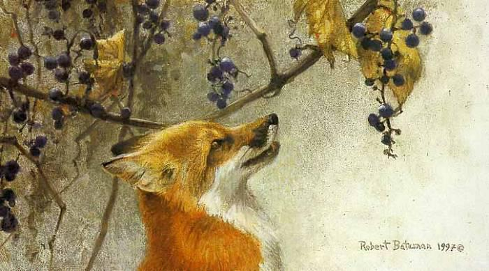

click anywhere on the page to see what happens and press the escape key to clear
The Fox & the Grapes

A Fox one day spied a beautiful bunch of ripe grapes hanging from a vine trained along the branches of a tree. The grapes seemed ready to burst with juice, and the Fox's mouth watered as he gazed longingly at them. The bunch hung from a high branch, and the Fox had to jump for it. The first time he jumped he missed it by a long way. So he walked off a short distance and took a running leap at it, only to fall short once more. Again and again he tried, but in vain. Now he sat down and looked at the grapes in disgust. "What a fool I am," he said. "Here I am wearing myself out to get a bunch of sour grapes that are not worth gaping for." And off he walked very, very scornfully.